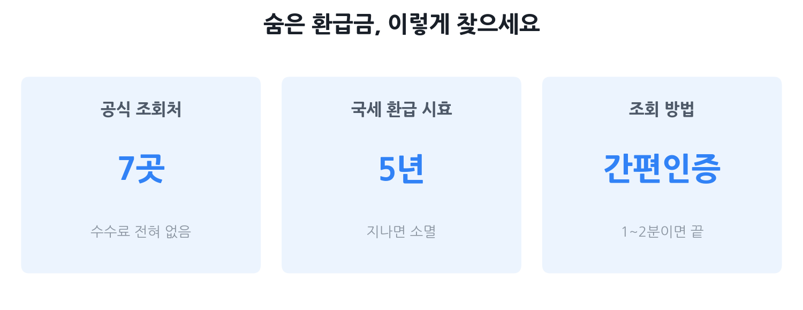

숨은 환급금 찾는 법 2026
— 공식 조회처 총정리와 사기 피하는 법
"내 돈인데 모르고 있었다"는 일이 생각보다 흔합니다. 국세청 미수령 환급금부터 잊고 있던 카드포인트, 오래전 해지한 통신사에서 돌아오지 않은 요금까지 — 2026년 기준 공식 조회처 7곳을 한눈에 정리했습니다. 수수료를 요구하는 가짜 업체와 사칭 문자를 피하는 법도 꼭 읽어보세요. 모든 공식 조회는 무료입니다.
- "나도 받을 돈이 있을까?" 막연히 궁금한 분
- 환급금 문자를 받았는데 진짜인지 가짜인지 불안한 분
- 국세·지방세·건강보험·카드포인트까지 한꺼번에 정리하고 싶은 분
- 수수료 없이 직접 조회하고 싶은 분

숨은 환급금이란? — 얼마나 흔한가
환급금이란 이미 냈는데 돌려받아야 할 돈입니다. 원천징수로 세금이 너무 많이 빠졌거나, 통신사를 해지하고 잔여 요금이 남거나, 카드포인트를 쓰지 않고 방치했을 때 발생합니다. 대부분 공공기관이나 금융사가 "와서 가져가세요"를 기다리지만, 본인이 조회·신청하지 않으면 그냥 쌓여 있습니다.
규모가 상상 이상입니다. 보험업계가 운영하는 숨은 보험금 통합조회 시스템에 따르면 2026년 기준 숨은 보험금만 약 11.2조 원이 주인을 기다리고 있습니다. 여기에 국세 미수령 환급금, 휴면예금, 카드포인트, 통신 미환급액까지 합하면 규모는 훨씬 더 커집니다.
공식 조회처 7곳 한눈에 비교
아래 표에서 내게 해당하는 항목을 체크해보세요. 모두 무료이며, 본인 인증만 하면 됩니다.
| 조회처 | 찾을 수 있는 것 | 공식 URL / 앱 | 인증 방법 |
|---|---|---|---|
| 국세청 홈택스 | 종합소득세·부가세·원천세 등 국세 미수령 환급금 | hometax.go.kr 손택스 앱 |
공동인증서·간편인증 |
| 정부24 | 국세·지방세·보관금·송달료 미환급금 일괄 조회 | gov.kr | 공동인증서·간편인증 |
| 어카운트인포 | 휴면예금, 숨은 보험금, 미사용 카드포인트 통합 | payinfo.or.kr 어카운트인포 앱 |
휴대폰 본인인증 |
| 내보험찾아줌 | 만기보험금·휴면보험금 등 숨은 보험금 | cont.insure.or.kr | 카카오·네이버·PASS 등 간편인증 |
| 여신금융협회 카드포인트 통합조회 |
전 카드사 미사용 포인트 → 계좌 입금 | cardpoint.or.kr | 공동인증서·간편인증 |
| 스마트초이스 | KT·SKT·LG U+ 등 통신요금 미환급액 | smartchoice.or.kr | 휴대폰 본인인증 |
| 국민건강보험공단 / 국민연금공단 |
건강보험·국민연금 과오납 환급금 | nhis.or.kr nps.or.kr |
공동인증서·간편인증 |
조회처별 상세 가이드
① 국세청 홈택스 — 국세 미수령 환급금
연말정산 후 환급액이 통보됐는데 계좌 정보를 입력하지 않았거나, 종합소득세 신고 후 환급을 그냥 방치한 경우 여기서 찾을 수 있습니다. 직장인이 3.3% 프리랜서 소득세를 신고하지 않은 경우도 마찬가지입니다.
- PC: hometax.go.kr → 상단 메뉴 [납부·고지·환급] → [국세환급금 찾기]
- 모바일: 손택스 앱 → [조회/발급] → [세금 신고납부 결과] → [환급금 조회]
- 로그인 후 미수령 환급금이 있으면 계좌 정보를 입력해 신청합니다.
- 2026년 현재 국세청 원클릭 환급 서비스도 운영 중입니다. AI가 미리 계산한 예상 환급액을 알려주고, 클릭 몇 번으로 신청이 끝납니다.
② 정부24 — 미환급금 일괄 조회
국세·지방세·각종 보관금과 송달료까지 여러 기관의 미환급금을 한 번에 조회할 수 있는 창구입니다.
- gov.kr → 검색창에 '미환급금 신청' 입력 → 본인 인증 후 조회
- 지방세 환급금은 여기서 조회 후 위택스(wetax.go.kr)에서도 확인·신청 가능
③ 어카운트인포 — 휴면예금·숨은 보험금·카드포인트 통합
금융결제원이 운영하는 어카운트인포(payinfo.or.kr)는 금융권 숨은 자산을 한 곳에서 볼 수 있는 가장 강력한 도구입니다. 오래전 만든 은행 계좌가 휴면 처리돼 잊고 있었다면, 여기서 바로 찾을 수 있습니다.
- 내계좌 한눈에: 본인 명의 전 금융기관 계좌·카드 현황
- 휴면예금 찾아줌: 오랫동안 거래 없는 휴면 계좌의 예금·보험금
- 내보험찾아줌: 숨은 보험금(만기·해약 후 미수령금) 조회 및 청구
- 휴대폰 본인인증만으로 이용 가능, 수수료 없음
④ 내보험찾아줌 — 숨은 보험금 전문
생명보험협회가 운영하는 cont.insure.or.kr에서는 숨은 보험금만 전문적으로 조회하고 청구까지 연결할 수 있습니다. 2026년 기준 약 11.2조 원의 보험금이 미청구 상태입니다. 보험을 여러 개 가입했거나, 부모님 보험을 대신 정리해야 한다면 꼭 확인하세요.
- 카카오톡·네이버·PASS 등 간편인증으로 1분 내 조회
- 만기보험금, 해약환급금, 사망보험금 등 미청구 내역 모두 포함
⑤ 여신금융협회 카드포인트 통합조회 — 포인트 계좌 입금
여러 카드사에 쌓인 포인트를 하나하나 카드 앱에서 확인하지 않아도 됩니다. cardpoint.or.kr 에서 전 카드사 포인트를 한 번에 조회하고, 현금으로 전환해 본인 명의 계좌로 입금받을 수 있습니다.
- 연중 상시 이용 가능 (한시적 서비스 아님)
- 조회 후 현금화 신청 시 대부분 실시간 입금 (주말·공휴일은 다음 영업일)
- 소멸 예정 포인트도 함께 확인 가능
⑥ 스마트초이스 — 통신요금 미환급액
이전 통신사에서 번호이동이나 해지 후 남은 요금이 돌아오지 않은 경우, smartchoice.or.kr 에서 조회하고 환급 신청을 할 수 있습니다.
- KT·SKT·LG U+·SK브로드밴드 등 유무선 서비스 포함
- 이용 시간: 09:00~20:00 (일요일·공휴일 제외)
- 유선 전화로는 조회 불가, 반드시 공식 사이트에서 본인인증 필요
⑦ 국민건강보험공단·국민연금공단 — 과오납 환급금
직장을 옮기거나 퇴직하면서 보험료가 이중으로 빠지거나 과납된 경우 환급금이 발생할 수 있습니다.
- 건강보험: nhis.or.kr 또는 'The건강보험' 앱 → 로그인 → 과오납 환급금 조회·신청 (소멸시효 3년)
- 국민연금: nps.or.kr 전자민원 → 개인 조회 → 과오납금 조회 또는 고객센터 1355 (소멸시효 5년)
사칭·사기 피하기 — 이것만 알면 안 당한다
환급금은 진짜로 존재하기 때문에 사기꾼들이 악용하기 좋습니다. "환급금이 있다"는 말 자체는 거짓이 아닐 수 있지만, 연락 방식과 요구 사항이 사기의 증거입니다. 아래를 반드시 기억하세요.
사칭 문자·스미싱 구별법
- 공식 기관은 URL이 포함된 문자를 보내지 않습니다. 국세청·건강보험공단·금융감독원 등은 환급 안내 시 링크를 문자로 발송하지 않습니다. 링크가 있다면 절대 클릭하지 마세요.
- 국세청 공식 이메일 도메인은 @nts.go.kr 또는 @hometax.go.kr입니다. 그 외 주소에서 온 메일은 사칭입니다.
- 문자를 받았다면 링크를 누르기 전에 카카오톡 '보호나라' 채널 또는 한국인터넷진흥원 118에 스미싱 여부를 먼저 확인하세요.
- 악성 링크를 누르면 스마트폰에 악성 앱이 설치되어 연락처·사진·신분증 사본이 유출될 수 있습니다. 클릭했다면 즉시 모바일 백신으로 검사하고, 필요시 기기를 초기화하세요.
가짜 앱·가짜 대행 업체 구별법
- 공식 앱은 구글 플레이스토어·애플 앱스토어에서 공식 기관(국세청, 금융결제원, 국민건강보험공단 등) 이름으로 배포됩니다. 출처가 불명확한 앱을 설치하지 마세요.
- "환급금 대신 찾아드립니다"를 광고하는 민간 업체 중에는 개인정보를 수집한 뒤 사라지거나, 받은 환급금의 일부를 수수료 명목으로 가져가는 경우가 있습니다. 직접 공식 사이트에서 조회하면 1~2분이면 됩니다.
- 전화로 "환급금이 있으니 계좌번호와 비밀번호를 알려달라"는 요청은 무조건 사기입니다. 공식 기관은 전화로 비밀번호나 신분증 사본을 요구하지 않습니다.
• 보이스피싱·스미싱 피해: 경찰청 사이버범죄 신고시스템(ecrm.police.go.kr) 또는 112
• 금융사기 피해: 금융감독원 1332
• 스미싱 의심 문자 신고: 한국인터넷진흥원 118
공식 환급 vs 사기, 한눈에 비교
| 구분 | 공식 환급 서비스 | 사기·사칭 |
|---|---|---|
| 수수료 | 없음 (완전 무료) | 수수료 요구 |
| 연락 방식 | 공식 사이트에서 본인이 직접 조회 | URL 포함 문자, 출처 불명 전화 |
| 개인정보 요구 | 공식 사이트 본인인증만 | 비밀번호·신분증 사본 요구 |
| 앱 배포 | 공식 앱스토어, 기관 명의 | 문자 링크 통해 설치 유도 |
| 입금 방향 | 내 계좌로 들어옴 | 먼저 입금하라고 요구 |
한 번에 다 찾는 체크리스트
아래 순서대로 30분이면 대부분의 숨은 환급금을 확인할 수 있습니다. 하나씩 체크해 보세요.
- ☐ 홈택스(hometax.go.kr) → 국세환급금 찾기 — 종소세·연말정산·부가세 환급
- ☐ 정부24(gov.kr) → 미환급금 신청 — 국세·지방세·송달료 일괄 조회
- ☐ 어카운트인포(payinfo.or.kr) → 휴면예금 찾아줌·내보험찾아줌 — 잊혀진 계좌·보험금
- ☐ 내보험찾아줌(cont.insure.or.kr) → 숨은 보험금 청구 — 만기·해약 후 미수령 보험금
- ☐ 카드포인트 통합조회(cardpoint.or.kr) → 포인트 계좌 입금 — 쌓인 포인트 현금화
- ☐ 스마트초이스(smartchoice.or.kr) → 통신 미환급액 조회 — 이전 통신사 잔여 요금
- ☐ 국민건강보험공단(nhis.or.kr) → 과오납 환급금 조회·신청
- ☐ 국민연금공단(nps.or.kr) → 전자민원 → 과오납금 조회
자주 묻는 질문
Q. 환급금 조회 문자를 받았는데 진짜인가요?
공식 기관은 환급금 안내 시 URL이 포함된 문자를 보내지 않습니다. 링크가 있다면 클릭하지 말고 직접 홈택스(hometax.go.kr)·정부24(gov.kr) 등 공식 사이트에 로그인해 조회하세요. 의심되면 118(한국인터넷진흥원)이나 1332(금융감독원)에 문의하세요.
Q. 환급금 조회를 해줄 테니 수수료를 내라는 업체, 믿어도 되나요?
절대 안 됩니다. 모든 공식 환급 서비스는 수수료가 없습니다. 수수료나 선입금을 요구하는 순간 사기입니다. 직접 위에 나온 공식 사이트에서 무료로 조회하세요.
Q. 어카운트인포 하나로 모든 환급금을 다 찾을 수 있나요?
어카운트인포(payinfo.or.kr)는 휴면예금, 숨은 보험금, 미사용 카드포인트를 한 번에 조회할 수 있어 매우 편리합니다. 하지만 국세·지방세 환급금은 홈택스·위택스·정부24에서, 통신요금 미환급액은 스마트초이스에서, 국민연금·건강보험 과오납은 각 공단에서 별도 조회해야 합니다.
Q. 환급금을 받지 않으면 언제 사라지나요?
국세 환급금은 환급 결정일로부터 5년, 건강보험 과오납 환급금은 3년, 국민연금 과오납 환급금은 5년의 소멸시효가 있습니다. 시효가 지나면 국고 또는 기금으로 귀속되어 청구가 불가능해질 수 있으니 지금 바로 조회하세요.
Q. 직장을 옮겼는데 이전 직장에서 공제된 건강보험료도 환급받을 수 있나요?
네. 직장가입자가 퇴직·이직 등으로 보험료를 과납한 경우 환급이 발생할 수 있습니다. 국민건강보험공단 홈페이지(nhis.or.kr) 또는 'The건강보험' 앱에 로그인해 과오납 환급금을 조회하고 신청하세요.
본 글은 국세청(nts.go.kr), 금융결제원 어카운트인포(payinfo.or.kr), 행정안전부 정부24(gov.kr), 금융감독원·생명보험협회 내보험찾아줌(cont.insure.or.kr), 여신금융협회 카드포인트 통합조회(cardpoint.or.kr), 방송통신위원회·한국통신사업자연합회 스마트초이스(smartchoice.or.kr), 국민건강보험공단(nhis.or.kr), 국민연금공단(nps.or.kr) 등 공공기관 공개 자료를 바탕으로 2026년 6월 기준 작성된 정보 제공용 콘텐츠입니다. 환급금 금액·절차·소멸시효 등은 변동될 수 있으니 반드시 각 공식 사이트에서 직접 조회·확인하세요. 본 페이지는 정보 제공 목적이며 특정 서비스 가입을 권유하지 않습니다. 사기 피해 발생 시 경찰청 사이버범죄 신고시스템(ecrm.police.go.kr) 또는 금융감독원(1332)에 신고하세요.